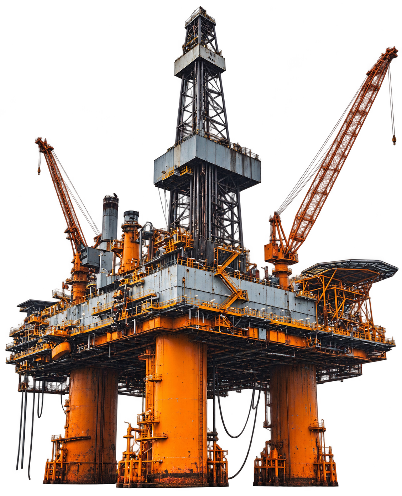

EXPERTISE

INDUSTRIAL POWER.
CONNECTED EXPERTISE.
Petrochemical supply, regional energy logistics, industrial consulting and oil exploration support for Nigeria’s industrial landscape.
Explore our servicesEXCELLENCE.
From product sourcing to strategic advice, our business segments connect dependable supply with the expertise and regional support industrial operations require.
INDUSTRIAL
POWER, DELIVERED.
01PETROCHEMICAL SUPPLY

Sourcing, logistics and distribution of essential petrochemical products for manufacturing and energy partners.
- Product sourcing & supply
- Industrial distribution
- Supply chain coordination
02ENERGY LOGISTICS

Localized downstream support through our presence in Lagos, Abuja and Akwa Ibom.
- Fuel & lubricant supply chains
- Downstream distribution
- Field operations maintenance
03INDUSTRIAL CONSULTING

Strategic advice informed by our leadership’s understanding of Nigeria’s economic and energy landscape.
- Energy project advisory
- Regulatory compliance
- Cross-border energy trade
04OIL EXPLORATION

Strategic involvement in upstream oil and gas exploration, supporting the development of Nigeria’s energy sector.
- Exploration initiatives
- Advanced exploration technologies
- Regional development partnerships
GOOD QUESTIONS.
CLEAR ANSWERS.
01. What does FIPCO do?
We specialize in downstream solutions, petrochemical distribution, regional energy logistics, industrial consulting and strategic oil exploration initiatives.
02. Where does FIPCO operate?
Our head office is in Ikoyi, Lagos, with a regional office in Abuja and operations in Uyo, Akwa Ibom.
03. How can I discuss a supply requirement?
Call our operations team on +234 903 333 2780 or email firstinterstate.petrochem@gmail.com with your requirements.
04. How do I explore a partnership?
Contact us on +234 809 312 6000 to discuss energy projects, industrial consulting or strategic partnership opportunities.
POWER YOUR
NEXT MOVE.
Dependable energy. Industrial expertise.
A partner invested in your progress.